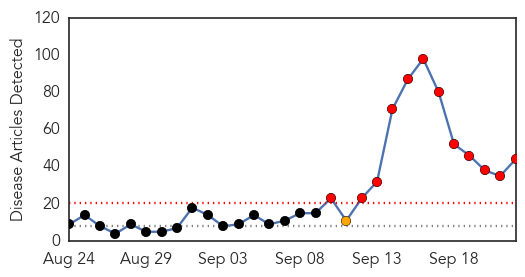
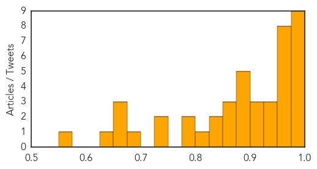
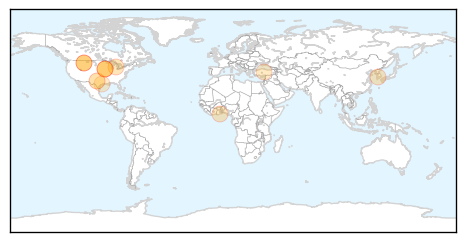

Dengue Fever
30-Day Web Trend
12 alerts, 1 warnings

30-Day Twitter Trend
0 alerts, 0 warnings

Article Locations

Article Confidences
Top Articles:
- 0.999
- Dengue figures at an all-time high
- 0.997
- Dengue Awareness On The Rise: Bengaluru Doctors
- 0.995
- A dozen doctors fall victim to dengue at Delhi's Safdarjung Hospital as death toll keeps rising
- 0.995
- Science, Technology and Medicine News Updates From Asia
- 0.994
- Dengue Outbreak: Two More Deaths In Delhi, Toll Rises To 25
- 0.989
- Dengue on a phenomenal rise with 1,919 cases, 12 deaths in the last week
- 0.981
- Islooites at risk of dengue fever outbreak
- 0.977
- More than 2,500 people treated for dengue in September
- 0.976
- Climate change effects
- 0.972
- 12 deaths, 1900 fresh cases in past week
- 0.970
- Slowdown in Tainan’s dengue cases must be monitored: CDC
- 0.968
- 2 more die of dengue, LG for full scale ops to check outbreak
- 0.963
- Health Ministry monitoring situation arising out of Dengue
- 0.962
- After Punjab and Haryana, dengue scare in Chandigarh with 136 cases
- 0.960
- Cavite declares state of calamity due to upsurge in dengue cases
- 0.959
- India's Dengue Fever Outbreak Reveals Need for Healthcare
- 0.953
- Health Ministry monitoring situation arising out of Dengue in Delhi
- 0.942
- Lessons from India’s dengue scare
- 0.937
- Health Ministry monitoring situation arising out of Dengue
- 0.936
- Over 1,900 dengue cases a week, Centre reviews hospitals
- 0.923
- 3 test positive for dengue
- 0.914
- DOH reports 16.5% higher dengue incidence
- 0.913
- Reports say India had over 10,000 Acute Encephalitis Syndrome cases in 2014
- 0.898
- Haryana bars private hospitals from listing patient as dengue-hit
- 0.897
- Latest News & Gossip on Popular Trends at India.com
- 0.884
- Fighting epidemics: Ministry seeks help from The Global Fund
- 0.883
- 4 Bollywood celebs who suffered from deadly dengue
- 0.876
- Ministry to seek Global Fund support in dengue fight
- 0.873
- Dengue danger ticks for four
- 0.873
- No panic like situation in Punjab, Haryana over dengue
- 0.863
- Lt Governor Najeeb Jung takes stock of dengue crisis in Delhi
- 0.846
- Fighting disease: Three die of dengue over six-week span in Hazara division
- 0.833
- Provinces asked to redouble efforts for control of dengue fever
- 0.822
- Nation, News, The Philippine Star
- 0.790
- Private Hospitals Blamed For Dengue Scare
- 0.784
- Cuttack to take sting out of dengue
- 0.733
- Science, Technology and Medicine News Updates From Asia
- 0.729
- Delhi govt likely to buy 1,000 new beds for dengue patients
- 0.698
- Dengue strikes again
- 0.672
- Delhi RTYC helps Samyeling combat dengue
- 0.655
- Health Minister calls for intensified efforts to fight Dengue fever
- 0.655
- :: News4u :: HC seeks details of funds released for dengue control
- 0.625
- QUICK EDIT: Politics can't make AIIMS free of dengue
- 0.557
- L-G directs officials to make all efforts to tackle dengue
Top Tweets:
-
No tweets found for Sep 22, 2015
Influenza
30-Day Web Trend
4 alerts, 0 warnings

30-Day Twitter Trend
3 alerts, 0 warnings

Article Locations
Article Confidences

Top Articles:
- 0.993
- Flu arrives early in Bitterroot, immunizations advised
- 0.978
- Time for flu shots once more
- 0.942
- KOTATV.com Rapid City, Black Hills, So Dak. Gillette Sheridan KOTA Territory News
- 0.920
- 'Ventilation Shutdown': The Gruesome Last Resort for Bird Flu-Infected Farms
- 0.912
- Alberta flu expert concerned about lack of immunization
- 0.826
- Appointment-Only Flu Shot Clinics for Skokie Residents
- 0.815
- NanoBio's Genital Herpes Vaccine Demonstrates Efficacy In Guinea Pigs As Both A Prophylactic And A Therapeutic Vaccine
- 0.813
- KFBB.com News, Sports and Weather
- 0.758
- Ghana, Business Advice, Jobs, News, Business Directory, Real Estate, Finance, Forms, Auto
- 0.757
- KBS World Radio
- 0.691
- Turkey farmers brace for possible return of bird flu
- 0.630
- Flu shot clinics will be held in Great Falls - KRTV.com
- 0.596
- Iowa firm gets first USDA license for bird flu vaccine
- 0.589
- HarrisVaccines Receives USDA Conditional License For Avian Influenza Vaccine, RNA
- 0.545
- The Rocky Mount Telegram
Top Tweets:
- 0.522
- RT: Adults Who Get Flu Vaccine Protect Their Parents: http://t.co/V42UhPmWTd via influenza healthcare